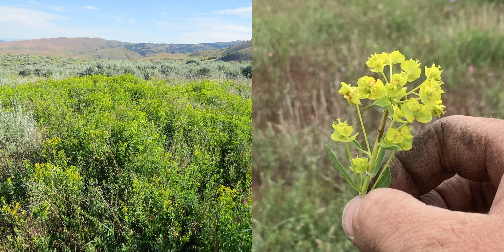
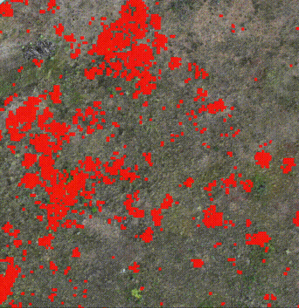

🌱 Leafy Spurge Dataset: Real-world Weed Classification Within Aerial Drone Imagery
Kyle Doherty 1
Max Gurinas 2
Erik Samsoe 1
Charles Casper 1
Beau Larkin 1
Philip Ramsey 1
Brandon Trabucco 3
Ruslan Salakhutdinov 3
1MPG Ranch
2University of Chicago Laboratory Schools
3Carnegie Mellon University


Leafy Spurge Dataset is a challenging real-world benchmark to galvanize efforts to find and remove invasive plants within drone imagery of the Montana prairie, and restore natural ecosystems in Montana.
[Paper]
[BibTeX]
[Code]
[HuggingFace]
Abstract
Invasive plant species are detrimental to the ecology of both agricultural and wildland areas. Euphorbia esula, or leafy spurge, is one such plant that has spread through much of North America from Eastern Europe. When paired with contemporary computer vision systems, unmanned aerial vehicles, or drones, offer the means to track expansion of problem plants, such as leafy spurge, and improve chances of controlling these weeds. We gathered a dataset of leafy spurge presence and absence in grasslands of western Montana, USA, then surveyed these areas with a commercial drone. We trained image classifiers on these data, and our best performing model, a pre-trained DINOv2 vision transformer, identified leafy spurge with 0.84 accuracy (test set). This result indicates that classification of leafy spurge is tractable, but not solved. We release this unique dataset of labelled and unlabelled, aerial drone imagery for the machine learning community to explore. Improving classification performance of leafy spurge would benefit the fields of ecology, conservation, and remote sensing alike. Code and data are available at our website: leafy-spurge-dataset.github.io.